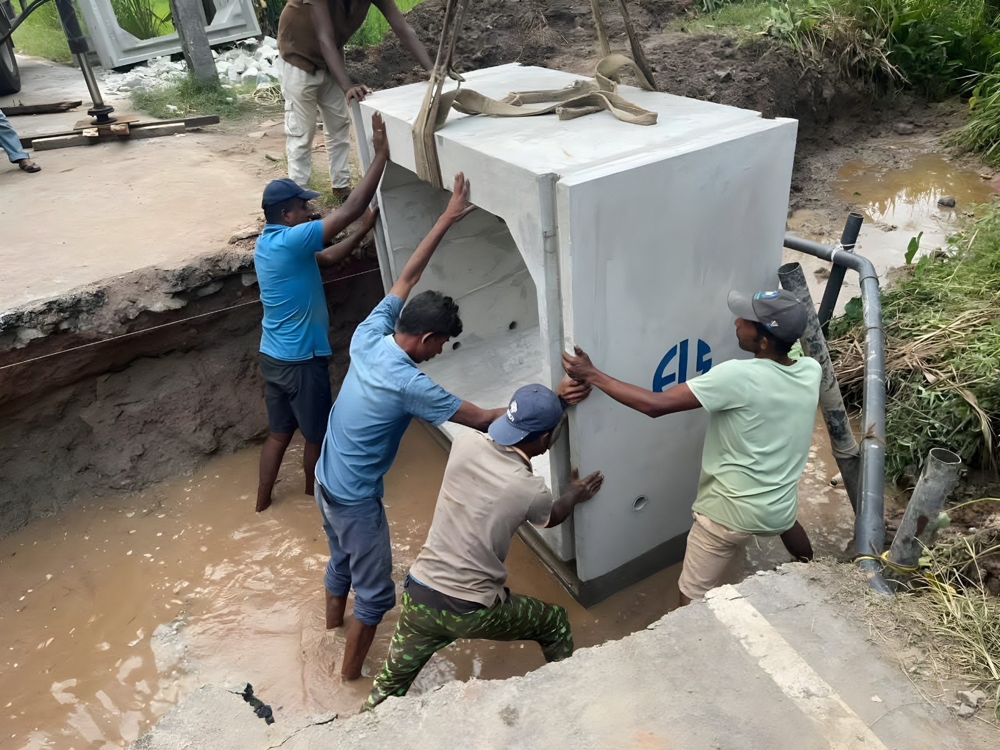
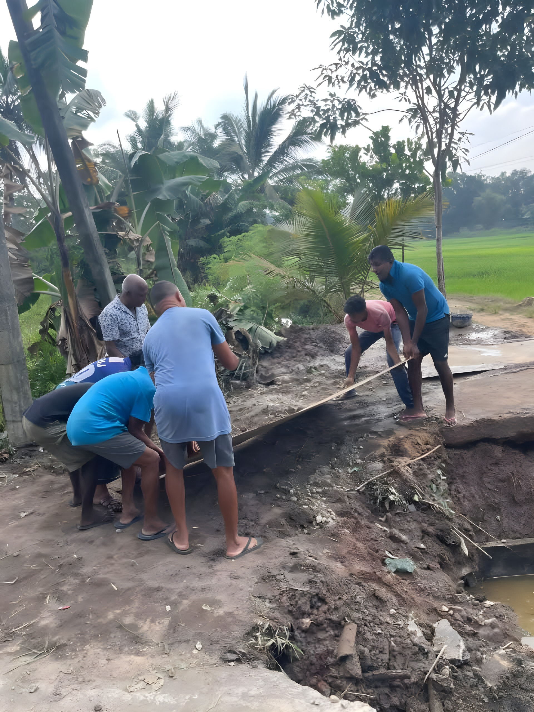
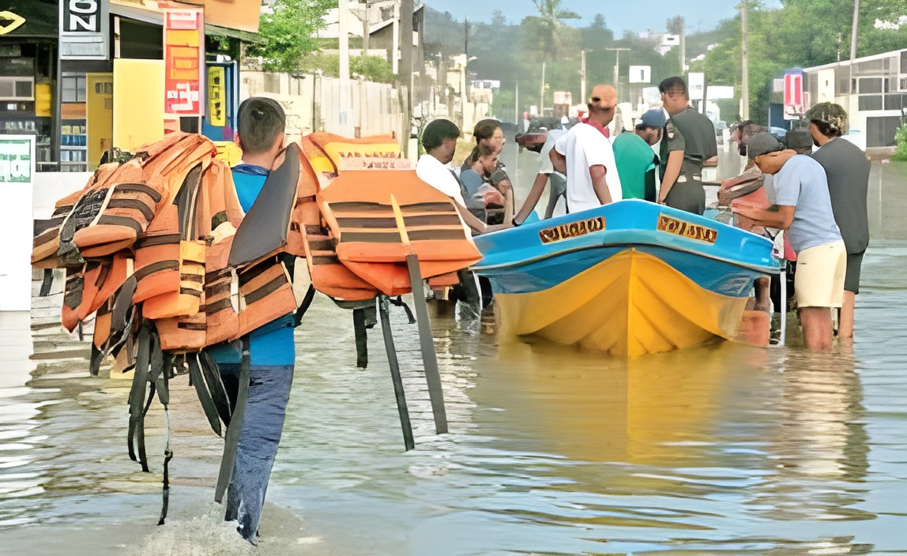
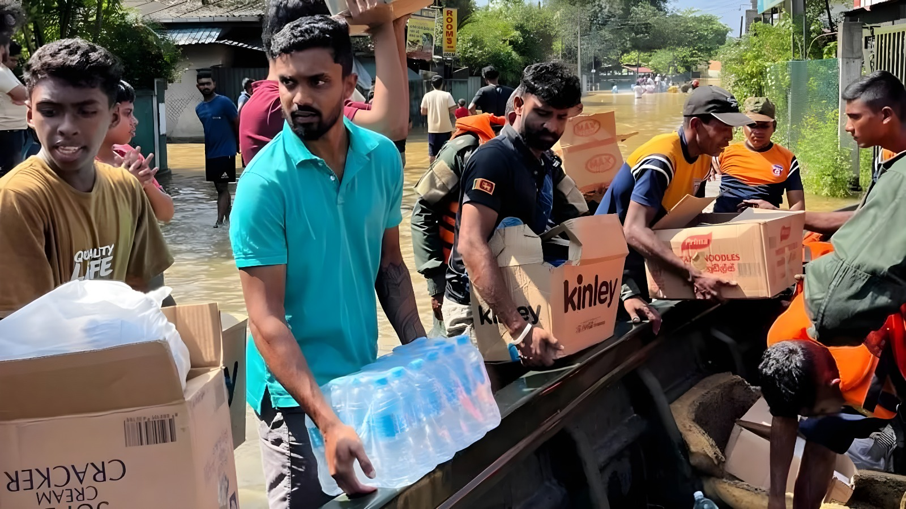
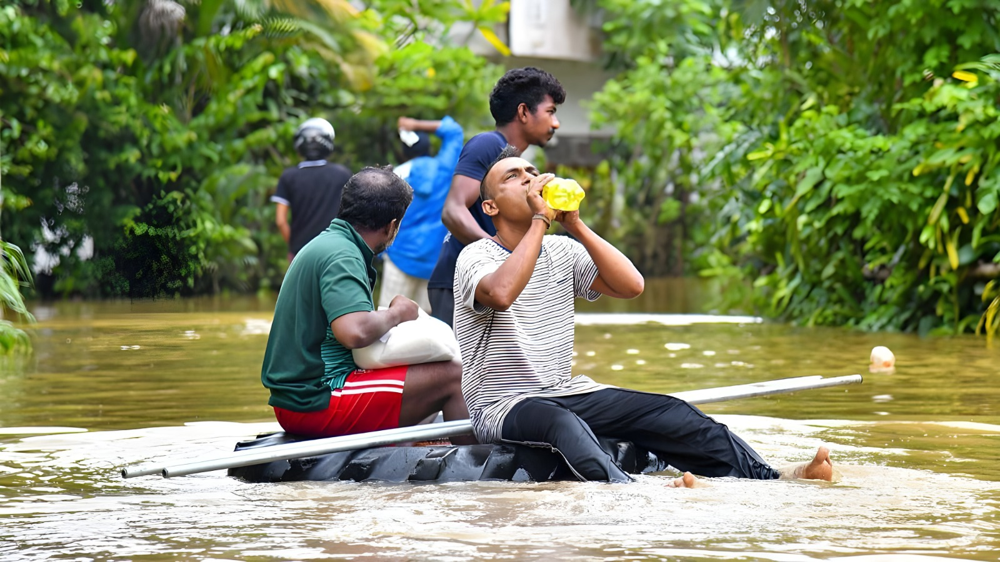
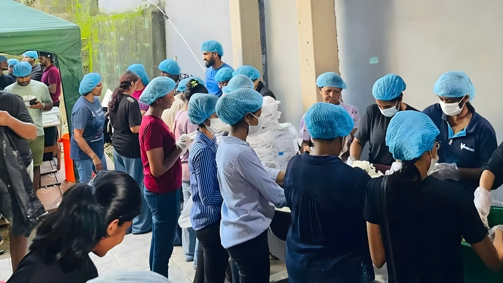
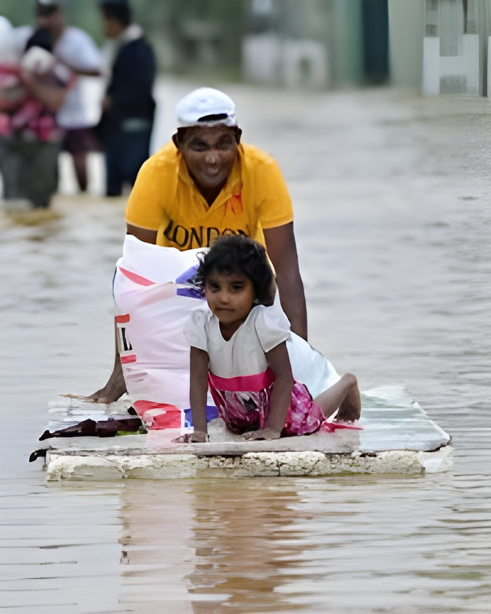
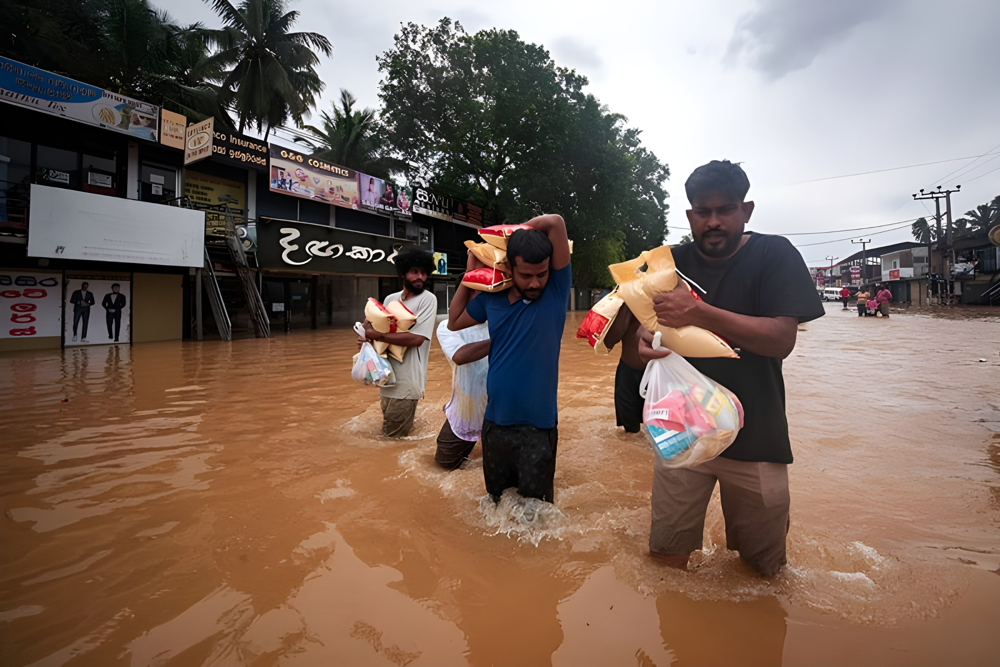
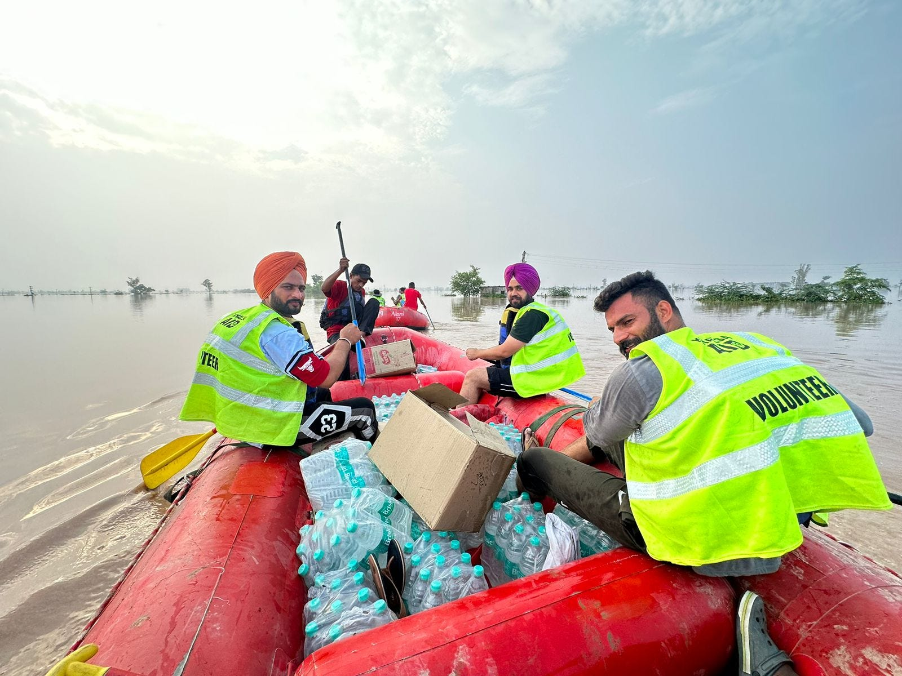
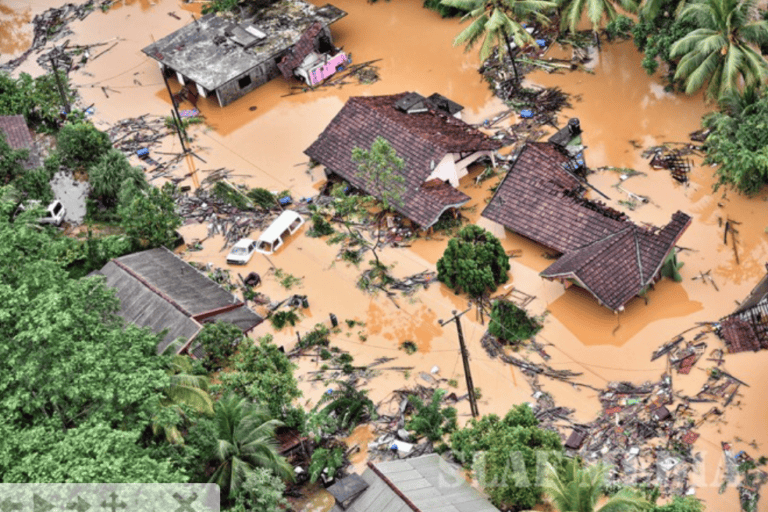

About This System
The Flood Relief Management System is designed to assist households affected by floods by enabling them to request essential support such as food, water, medicine, and temporary shelter. Users can submit their needs quickly, monitor the status of their requests, and ensure that relief reaches them efficiently. The system improves coordination between affected communities and relief providers, helping aid reach those in urgent need.
Available Relief Services
Flood Severity Levels
- Low - Minor water level, manageable situation
- Medium - Partial house damage or limited access
- High - Severe flooding, urgent assistance required
How to Request Relief
- Login or Sign Up to access your account
- Fill out and submit a new relief request
- View all your submitted requests
- Edit or update any request if needed
- Delete a request if it is no longer required
- Logout when you are done
Important Instructions
- Provide accurate location
- Enter valid contact number
- Mention urgent needs clearly
- Track request status
Emergency Contacts
Disaster Management Center: 117
Police Emergency: 119
Flood Relief Photo Gallery










